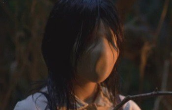
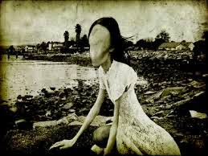

Imagine you’re hiking through South Korea’s Taebaek mountain range. At first, nothing would seem to be wrong. Hiking is very popular in South Korea and, like many others, you’re likely to be drawn to the mountains as much for their rich and varied history as for their natural beauty. Perhaps the most famous mountain in the range is Taebaek-san itself. Renowned for the sparkling frost-coated foliage which covers its slopes in winter, the highest peaks of Taebaek-san are also sacred ground, home to ancient Shamanist altars. While you’d love to explore the historic and stunning site, the crowds which flock there are a bit off-putting. So, hoping for a more solitary experience, you head deeper in to the range to Ilwol-san: the Sun-Moon Mountain. Ilwol-san is a much more remote peak, with far fewer venturing to its slopes. When you get there you realize that the road up the mountain has been cordoned off, designated as off-limits due to the mountain’s significance for military communication. Still, after making it all the way out here you’re reluctant to turn back, and the prospect of having the mountain to yourself is too good to pass up. You sneak around the fence, telling yourself you’ll just go for a short walk to check it out. You venture further and further into the twisting branches lining the sides of the mountain. You know you should head back, but there’s no one to catch you anyway. Finally, realizing it’s gotten late in the afternoon, you turn around to head back. You walk straight back down the way you came, but with a growing panic you start to notice that the landscape looks unfamiliar. The once straight slope now seems to twist and turn, and through the dense foliage you’re suddenly unsure which way is up and which is down. Telling yourself it’s just your imagination you persist, but as the minutes turn to hours and night sets in you’re forced to realize that you’re lost. To make matters worse, you could swear there’s something else in these woods, something lurking just out of the corner of your eye.
Unnerved by this figment you’re reluctant to stop moving, but you know you can’t walk all night and every survival show you’ve ever seen has told you it’s best to stay in one place. You stop and listen. The night is still. You look around and see nothing but trees. Anxious and exhausted, you try to calm yourself down and curl up against a tree, knowing you’ll have a better chance of finding your way out once it’s light. Finally you drift into sleep.
You’re jolted from your sleep after what seems like only a few seconds, your heart racing. You have no idea why. You look around frantically and everything remains quiet and still, only the once-mild air is now frigid. Huddling for warmth you peer out into the darkness, seeing nothing at first. Then something shifts in the dark. As quick and subtle as a change in the light, a pale shadow seems to glide through the trees. You shut your bleary eyes tightly, hoping to clear away this aberration, but when you open them you’re horrified to see the figure drawing closer. What emerges from the darkness is not what you’d conjured in the fearful depths of your imagination. There are no glowing eyes, no salivating jaws or sharp fangs – but it’s somehow far worse. There are no features at all. Pale and blank, without any face or even limbs, this seemingly nondescript figure fills you with an inexplicable and overwhelming sense of dread. Powerless to move, you can’t tell if you’re screaming or if it’s just the blood rushing in your head. You’re fixed to the spot, watching wide-eyed in horror as, without arms or legs, this thing somehow moves closer and closer. If this were real, it would be the last thing you saw.
The egg ghost, or Dalgyal Gwishin, is a monster horrifying in its simplicity. These utterly opaque creatures are said to stalk those who venture in to Korea’s densely forested mountains. Accounts of the egg ghost vary, with some saying it’s only devoid of a face, and some saying it is as completely smooth and round as an egg. One horrifying fact that remains constant might explain these other inconsistencies – no one who sees the egg ghost lives for long.The egg ghost is something of an anomaly in Korean mythology. While there are a rich array of ghosts and monsters in Korean folk stories, most tend to retain human traits. There is the Cheonyeo Gwishin, the virgin ghost; the Mul Gwishin, the drowned ghost; and the Gumiho, a seductive ghost with nine white tails, just to name a few. While some of these ghosts are said to be threatening, their malevolence is always motivated by the trauma suffered in their lives. What is perhaps most terrifying about the egg ghost is that it has no apparent motivation; it brings death with no rhyme or reason.